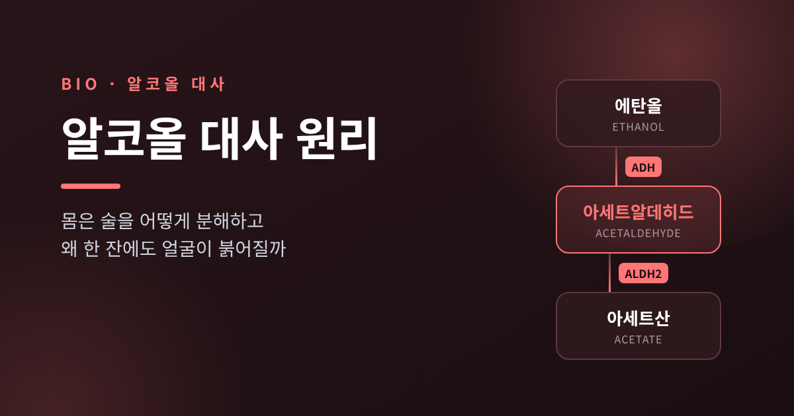
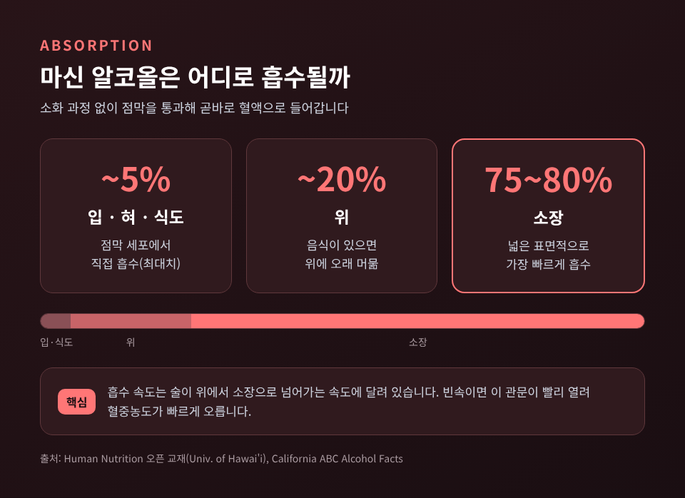
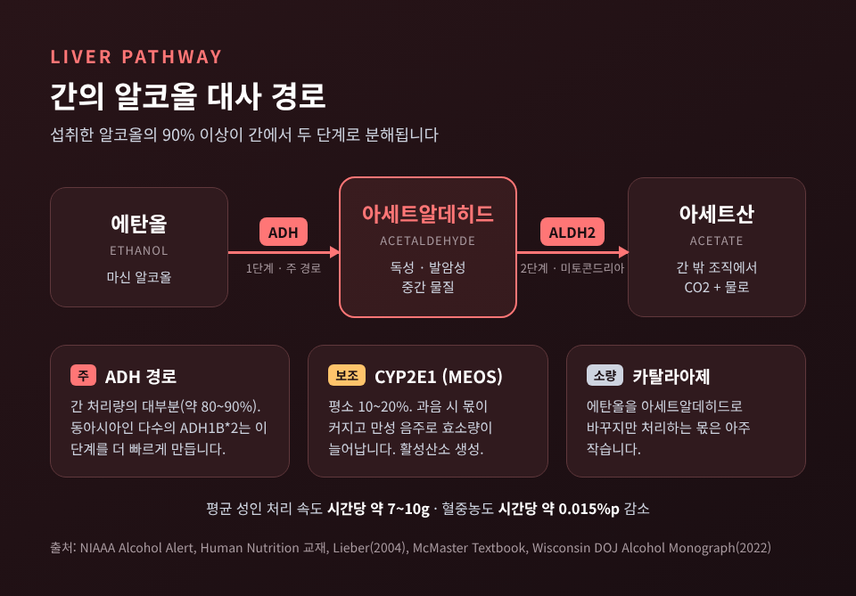
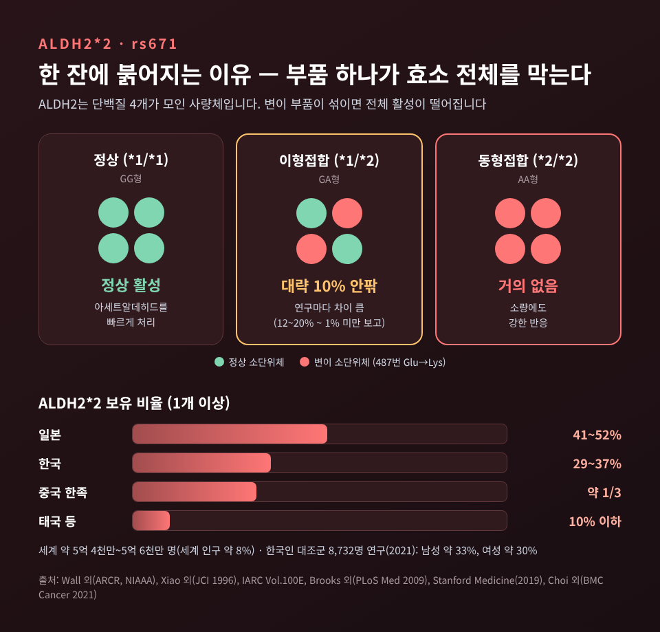
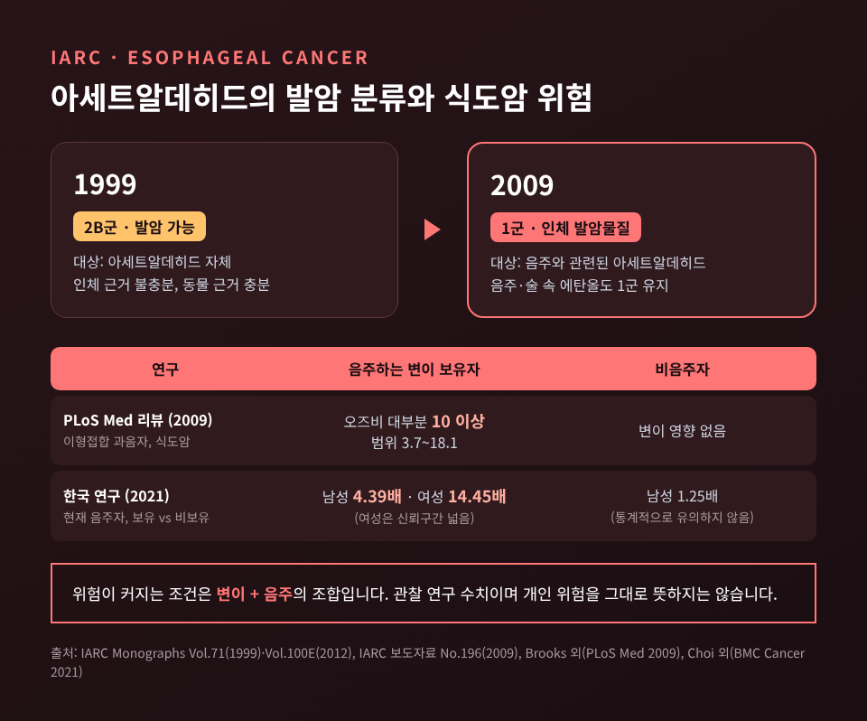
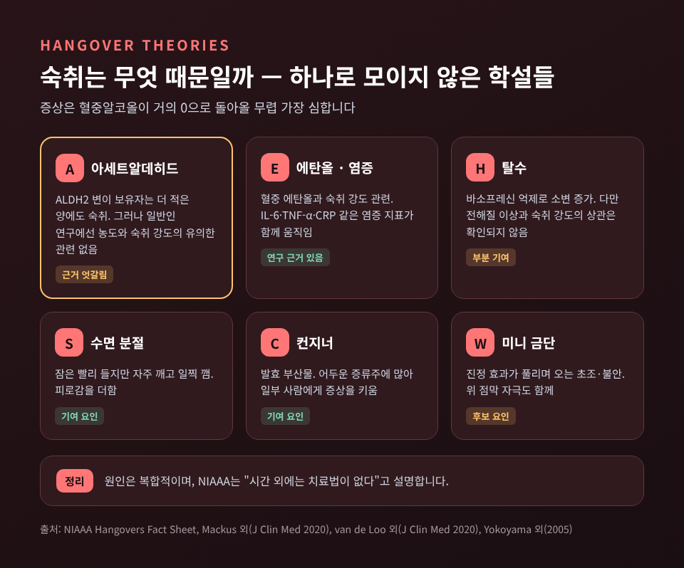

알코올 대사 원리 — 몸은 술을 어떻게 분해하고 왜 얼굴이 붉어질까

오늘은 알코올 대사 원리를 정리해 보려 합니다. 술 한 모금이 몸속에서 어떤 길을 거쳐 사라지는지, 그리고 왜 어떤 사람은 한 잔에도 얼굴이 붉어지는지를 효소 이름과 함께 따라가 보겠습니다.
먼저 세 줄로 요약합니다.
- 알코올은 주로 간에서 ADH → 아세트알데히드 → ALDH2 → 아세트산 순으로 분해됩니다. 성인 평균 처리량은 시간당 7~10g 정도입니다.
- 한 잔에 얼굴이 붉어지는 것은 ALDH2*2(rs671) 변이로 독성 중간물질인 아세트알데히드가 쌓이기 때문입니다. 한국인은 대략 10명 중 3명이 이 변이를 가집니다.
- 이 변이가 있는 사람이 꾸준히 마시면 식도암 위험이 크게 올라갑니다. '술이 늘었다'는 느낌도 이 효소가 회복됐다는 뜻은 아닙니다.
이 글은 교양 차원의 설명이며 의학적 조언이 아닙니다.
■ 술은 어디로 흡수될까 — 위 20%, 소장 80%
알코올은 소화 과정을 거치지 않습니다. 점막을 그대로 통과해 혈액으로 들어갑니다.
영양학 교재 기준으로 입·혀·식도에서 최대 5%, 위에서 약 20%가 흡수됩니다. 나머지 75~80%는 소장의 몫입니다. 소장은 표면적이 테니스 코트만 하다고 표현될 만큼 넓어서 흡수가 빠릅니다.
그래서 관건은 술이 위에서 소장으로 넘어가는 속도입니다. 음식이 있으면 알코올이 위에 더 오래 머물고 위벽과 닿는 면적도 줄어 흡수가 늦춰집니다. 빈속에 마신 술이 유난히 빨리 오르는 이유입니다.
혈액에 들어간 알코올은 뼈와 지방을 뺀, 수분이 많은 조직 전체로 퍼집니다. 같은 양을 마셔도 여성의 혈중알코올농도가 더 빨리 오르고, 체중이 많을수록 더 천천히 오른다고 교재들은 설명합니다.

■ 간의 두 단계 분해 — ADH와 ALDH2
섭취한 알코올의 90% 이상은 간에서 대사됩니다. 나머지 일부는 호흡·소변·땀으로 그대로 빠져나가는데, 그 비율은 자료에 따라 5%에서 10% 안팎으로 차이가 있습니다.
간의 주 경로는 두 단계입니다.
- 1단계: 알코올탈수소효소(ADH)가 에탄올을 아세트알데히드로 바꿉니다.
- 2단계: 알데히드탈수소효소, 그중에서도 미토콘드리아에 있는 ALDH2가 아세트알데히드를 아세트산으로 바꿉니다.
- 아세트산은 주로 간 밖의 조직에서 이산화탄소와 물로 분해됩니다.
이 과정의 함정은 중간 물질에 있습니다. 미국 국립알코올남용·중독연구소(NIAAA)는 아세트알데히드를 "독성이 매우 강한 물질이자 알려진 발암물질"로 설명합니다. 몸은 술을 없애는 과정에서 에탄올보다 더 해로운 물질을 잠시 거쳐 가는 셈입니다.
정상이라면 ALDH2가 이 물질을 빠르게 치우기 때문에 오래 머물지 않습니다. 한편 동아시아인 다수가 가진 ADH1B*2 변이는 에탄올을 더 빨리 아세트알데히드로 바꿉니다. NIAAA 리뷰에 따르면 한국인의 88~96%가 이 '빠른 ADH'를 하나 이상 지닌 것으로 추정됩니다.

■ 보조 경로 CYP2E1, 그리고 '시간당 7~10g'
ADH 말고도 길이 하나 더 있습니다. 간세포 소포체의 CYP2E1, 흔히 MEOS(미세소체 에탄올 산화계)라 부르는 경로입니다.
보통 음주자에게서는 간 처리량의 10~20% 정도를 맡습니다. 많이 마시면 넘치는 에탄올의 상당 부분을 이 경로가 처리하고, 만성 음주가 이어지면 CYP2E1 자체의 양이 늘어납니다.
대가도 있습니다. CYP2E1은 활성산소를 만들기 쉬운 효소이고, 아세트아미노펜 같은 약을 독성 대사물로 바꾸기도 합니다. 카탈라아제라는 효소도 일부를 처리하지만 그 몫은 아주 작습니다.
분해 속도는 생각보다 일정합니다. 의학 교재는 평균 성인이 시간당 7~10g의 알코올을 대사한다고 적고 있습니다. 혈중농도로 보면 시간당 평균 0.015%p가 내려가며, 전형적인 범위는 0.010~0.025%p입니다. 농도가 0.02% 근처로 내려가기 전까지는 마신 양과 상관없이 거의 같은 속도로 줄어듭니다.
예전엔 사우나에서 땀을 빼거나 진한 커피를 마시면 술이 빨리 깬다고들 했습니다. 지금 자료들은 물·커피·찬물 샤워·잠 모두 혈중농도를 낮추지 못한다고 말합니다. 한꺼번에 많이 마신 술은 간 앞에서 줄을 서서 차례를 기다릴 뿐입니다.
■ 한 잔에 붉어지는 이유 — ALDH2*2(rs671)
얼굴이 쉽게 붉어지는 사람의 상당수는 ALDH2 유전자에 rs671이라는 변이를 갖고 있습니다. ALDH2*2라고도 부르며, 효소 단백질의 487번 아미노산이 글루탐산에서 라이신으로 바뀐 형태입니다.
기전이 흥미롭습니다. ALDH2는 단백질 네 개가 모여 하나의 효소로 일하는 사량체입니다. 변이 유전자를 하나만 물려받아도 정상 부품과 변이 부품이 섞여 조립되고, 변이 부품이 전체의 작동을 방해합니다. 그래서 한쪽만 변이여도 활성이 크게 떨어집니다.
남은 활성이 얼마인지는 연구마다 다릅니다. 국제암연구소(IARC)는 약 10%, NIAAA 리뷰는 12~20%로 보고합니다. 2009년 PLoS Medicine 리뷰는 100배 이상 감소한다고 적었습니다. 변이를 두 개 가진 사람은 활성이 거의 없습니다.
아세트알데히드가 쌓이면 히스타민 분비 등을 거쳐 혈관이 넓어집니다. 얼굴과 목이 붉어지고, 메스꺼움과 두근거림이 따라옵니다. 심하면 혈압이 떨어지기도 합니다. 이형접합자는 음주 후 침 속 아세트알데히드가 정상인의 2~3배라는 보고도 있습니다.
보유 비율은 여러 소스를 교차해 보면 대체로 일치합니다.
- 세계: 약 5억 4천만~5억 6천만 명, 세계 인구의 약 8%
- 한국: 29~37%(NIAAA 리뷰). 한국인 대조군 8,732명을 분석한 2021년 연구에서는 남성 약 33%, 여성 약 30%
- 일본: 41~52% / 중국 한족: 약 3분의 1 / 태국 등: 10% 이하
- 변이를 두 개 가진 동형접합은 약 5%로 소수입니다.

이 변이에는 다른 얼굴도 있습니다. 마시면 괴롭기 때문에 알코올 의존 위험이 크게 낮아집니다. 아시아인 메타분석에서 변이 1개는 오즈비 0.22, 2개는 0.12였습니다.
■ 붉어지는 얼굴이 보내는 경고 — 아세트알데히드와 식도암
IARC의 판단은 시간이 지나며 더 분명해졌습니다. 1999년에는 아세트알데히드 자체를 '인체 발암 가능 물질(2B군)'로 분류했습니다. 2009년에는 "음주와 관련된 아세트알데히드"를 1군 발암물질로 결론지었습니다. 음주 자체와 술 속 에탄올도 1군으로 유지됐습니다.
위험이 집중되는 곳은 식도, 그중에서도 편평세포암입니다.
- 2009년 PLoS Medicine 리뷰: 이형접합 과음자의 식도암 오즈비는 대부분 연구에서 10 이상(범위 3.7~18.1)이었습니다. 적당히 마시는 이형접합자에서도 위험이 늘었고, 술을 마시지 않는 사람에게서는 변이의 영향이 없었습니다.
- 2021년 한국 연구: 현재 음주자 중 변이 보유자의 위험은 남성 4.39배, 여성 14.45배였습니다(여성은 신뢰구간이 넓습니다). 마시지 않는 남성에게서는 유의한 차이가 없었습니다.
공통된 메시지는 하나입니다. 변이만으로가 아니라 변이와 음주가 만날 때 위험이 커집니다.

한계도 짚어 두겠습니다. 이 수치들은 대부분 관찰 연구에서 나왔고, 음주량과 기간에 따라 폭이 큽니다. 개인의 위험을 그대로 말해 주는 숫자는 아닙니다.
다만 연구자들이 권하는 점은 분명합니다. "술을 마시면 얼굴이 붉어진 적이 있는가"라는 질문 하나가 일본 남성에서 변이를 90%의 민감도로 가려냈습니다. 홍조를 감추려고 항히스타민제를 먹고 계속 마시는 습관은 오히려 식도암 가능성을 높일 수 있다는 경고도 있습니다. 얼굴이 붉어지는데도 꾸준히 마셔 왔다면, 소화기내과 전문의와 상담하고 내시경 검진 필요성을 확인해 보시길 권합니다.
■ 숙취는 아세트알데히드 탓일까 — 학설 나란히 보기
"숙취는 아세트알데히드 때문"이라는 설명이 널리 퍼져 있습니다. 근거가 없지는 않습니다. 일본 직장인 251명 연구에서 ALDH2 이형접합자는 남녀 모두 더 적은 양에도 숙취를 겪었습니다.
하지만 이것만으로는 설명이 부족합니다. 숙취는 혈중알코올이 거의 0으로 돌아왔을 때 가장 심한데, 아세트알데히드는 짧게 존재하는 물질입니다. 2020년 한 리뷰는 혈중 에탄올 농도는 숙취 강도와 관련이 있었지만 아세트알데히드 농도는 유의한 관련이 없었다고 정리했습니다. 에탄올이 빨리 제거될수록 숙취가 가벼웠다는 결과도 함께였습니다. 같은 연구진의 다른 분석에서는 IL-6, TNF-α, CRP 같은 염증 지표가 숙취 강도와 함께 움직였습니다.
NIAAA가 꼽는 후보도 여러 갈래입니다.
- 바소프레신 억제로 소변이 늘어나는 탈수
- 잠은 빨리 들지만 자주 깨는 수면 분절
- 위 점막 자극과 위산 증가
- 염증 반응과 아세트알데히드
- 진정 효과가 풀리며 오는 불안, 이른바 미니 금단
- 발효 부산물인 컨지너(어두운 증류주에 많음)

정답은 아직 하나로 모이지 않았습니다. 전해질 이상과 숙취 강도 사이에는 상관이 확인되지 않았고, NIAAA는 "시간 외에는 치료법이 없다"고 말합니다. 숙취를 막겠다고 자기 전 아세트아미노펜을 먹는 것은 알코올과 겹쳐 간에 해로울 수 있습니다.
■ '술은 늘어난다'의 실제 의미
자주 마시면 실제로 덜 취한 듯 느껴집니다. 이를 내성이라 합니다.
기능적 내성은 뇌의 GABA 수용체계가 알코올에 덜 반응하게 되는 변화입니다. 혈중농도가 높아도 겉으로 덜 취해 보입니다. 익숙한 장소에서 더 버티는 환경 의존 내성, 반복으로 생기는 학습된 내성도 여기에 속합니다.
대사적 내성은 간이 분해 효소를 더 만들어 내는 변화입니다. 앞서 본 CYP2E1이 대표적입니다. 해독 치료 중인 만성 음주자의 알코올 제거 속도가 가장 빠른 축에 속한다는 기록도 있습니다.
하지만 ALDH2 유전형은 바뀌지 않습니다. 붉어지던 사람 일부는 아세트알데히드와 홍조에 둔해져 상습 과음자가 되기도 합니다. 도쿄의 과음 남성 약 26%가 이형접합자였다는 보고가 그 예입니다. 늘어난 것은 견디는 감각과 보조 효소이지, 아세트알데히드를 치우는 능력이 아닙니다. 덜 취한 것처럼 느껴도 운전 능력의 손상은 상쇄되지 않는다는 점도 기억해 두시면 좋겠습니다.
정리하면 이렇습니다. 알코올은 위와 소장에서 흡수돼 간에서 ADH와 ALDH2를 차례로 거치며 분해되고, 그 속도는 대략 일정합니다. 그 사이를 잇는 아세트알데히드가 홍조의 원인이자, 음주와 함께할 때 1군 발암물질로 분류된 물질입니다. 숙취의 원인은 아직 하나로 정리되지 않았고, 술이 늘었다는 느낌은 해독 능력이 커졌다는 뜻이 아닙니다.
"붉어지는 얼굴은 체질 자랑이 아니라 몸이 보내는 신호입니다."
한 잔에 붉어지는 분이 다음 잔을 앞두고 잠시 망설이신다면, 그 망설임이 이 글이 드리고 싶었던 전부입니다.
참고 자료
- NIAAA, El metabolismo del alcohol (Alcohol Alert) — https://niaaa.nih.gov/publications/el-metabolismo-del-alcohol
- Wall TL 외, Biology, Genetics, and Environment: Underlying Factors Influencing Alcohol Metabolism, Alcohol Research: Current Reviews 38(1) — https://arcr.niaaa.nih.gov/media/466/download
- Iwamoto DK 외, Heavy Episodic Drinking and Alcohol-Related Problems Among Asian Americans, Alcohol Research: Current Reviews 38(1) — https://arcr.niaaa.nih.gov/media/441/download
- NIAAA, Hangovers Fact Sheet — https://pubs.niaaa.nih.gov/publications/hangoversfactsheet/hangover_fact_sheet.pdf
- IARC Press Release No.196 (2009) — https://www.iarc.who.int/wp-content/uploads/2018/07/pr196_E.pdf
- IARC Monographs Vol.100E (2012) — https://publications.iarc.who.int/_publications/media/download/5255/acb03faa0bbde7cf84987d1d7d287e2f74e8399b.pdf
- IARC Monographs Vol.71 (1999), Acetaldehyde — https://publications.iarc.who.int/_publications/media/download/2291/c8544cbda9f596bef663eb54801042da1af73405.pdf
- NTP Report on Carcinogens, Acetaldehyde — https://ntp.niehs.nih.gov/ntp/roc/content/profiles//acetaldehyde.pdf
- Brooks PJ 외, The Alcohol Flushing Response: An Unrecognized Risk Factor for Esophageal Cancer from Alcohol Consumption, PLoS Medicine (2009) — https://journals.plos.org/plosmedicine/article?id=10.1371/journal.pmed.1000050
- Stanford Medicine News (2019) — https://med.stanford.edu/news/all-news/2019/12/alcohol-asian-glow-mutation-may-contribute-to-alzheimers.html
- Choi CK 외, Association between ALDH2 polymorphism and esophageal cancer risk in South Koreans, BMC Cancer (2021) — https://pmc.ncbi.nlm.nih.gov/articles/PMC7941978
- Xiao Q 외, J Clin Invest 98(9) (1996) — https://www.jci.org/articles/view/119007
- Mackus M 외, The Role of Alcohol Metabolism in the Pathology of Alcohol Hangover, J Clin Med (2020) — https://doi.org/10.3390/jcm9113421
- van de Loo AJAE 외, The Inflammatory Response to Alcohol Consumption and Its Role in the Pathology of Alcohol Hangover, J Clin Med (2020) — https://mdpi.com/2077-0383/9/7/2081
- Lieber CS, The discovery of the microsomal ethanol oxidizing system (2004) — https://pubmed.ncbi.nlm.nih.gov/15554233/
- University of Guelph, Alcohol Tolerance — https://www.alcohol-toxicity.uoguelph.ca/tolerance
- Wisconsin Department of Justice, Alcohol Monograph (2022) — https://www.wisdoj.gov/Forensic%20Science/Alcohol%20Monograph-37306-1.pdf
- Nutrition Essentials, Chapter 8: Alcohol — https://pressbooks.pub/nutritionessentials/chapter/chapter-8-alcohol
- California ABC, Alcohol Facts — https://abc.ca.gov/education/licensee-education/alcohol-facts
- McMaster Textbook of Internal Medicine (empendium) — https://empendium.com/mcmtextbook/chapter/B31.II.20.2.1
- News-Medical, Yokoyama 외 2005 연구 보도 — https://www.news-medical.net/news/2005/07/17/11732.aspx